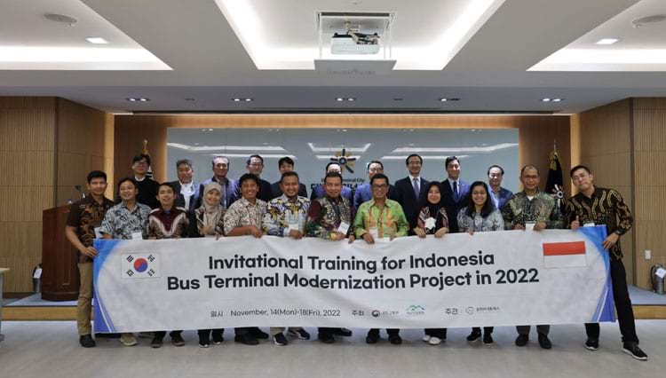

Media Report from NIA
Media Report
Judul + Isi
Wah! Mirip Bandara, Loket Terminal Kampung Rambutan Kinclong
CNBC Indonesia
2023-07-20
Penampakan Loket Baru Terminal Kampung Rambutan
Republika
2023-07-21
Lebih Rapi dan Modern, Begini Wajah Baru Terminal Kampung Rambutan
Bisnis.com
2023-07-27
Terminal Bus Kampung Rambutan Jadi Contoh Utama Modernisasi
RRI
2023-08-23
Wajah Baru Terminal Kampung Rambutan
Bisnis Indonesia
2023-07-26
Samchully Networks Terpilih sebagai Perusahaan yang Bertanggung Jawab atas Proyek ODA
MK
2021-04-13
Samchully Networks Terpilih sebagai Perusahaan Tuan Rumah Proyek ODA
Wow TV
2021-04-13
Samchully Networks Melaksanakan Proyek Modernisasi Terminal Bus di Indonesia
Siminilbo
2022-09-06
Samchully Networks, Perusahaan IT UKM Pertama di Korea yang Melaksanakan Proyek Sistem Modernisasi Terminal Bus di Indonesia
FNNews
2022-09-14
Bantuan dari Korsel, Terminal Kampung Rambutan dan Leuwi Panjang Bakal Jadi Terminal Percontohan
Liputan6
2022-11-21
Dua Terminal Bus di Indonesia akan Dimodernisasi dengan Menerapkan Tujuh Sistem
Tribunnews
2022-11-20

Korea Selenggarakan Proyek Majukan Sistem Transportasi di Indonesia
Times Indonesia
2022-11-21
Disebut 'Terminal Berhantu', Leuwipanjang Bakal Terapkan Tiket Online Sebelum Lebaran
Tribun Jabar
2022-02-21
Layanan Terminal Leuwipanjang Bandung Bakal Dibikin Modern
Detik
2023-02-21
200 Peserta Ikuti Pelatihan Modernisasi Terminal Bus
Berita Jakarta
2023-03-02
Samchully Networks dan Hubdat Kemenhub Menyelenggarakan Pelatihan Modernisasi Terminal Bus
Siminilbo
2023-03-08
1
2
3